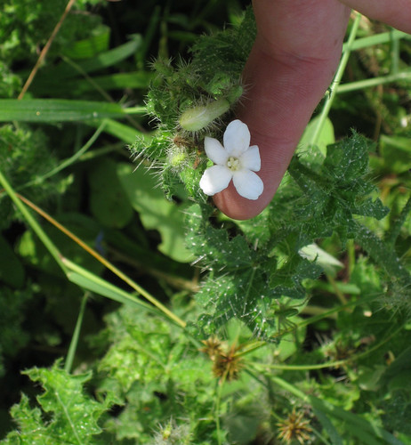
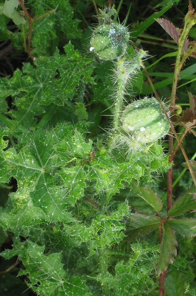
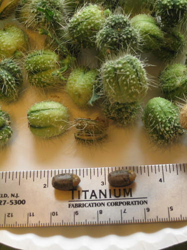
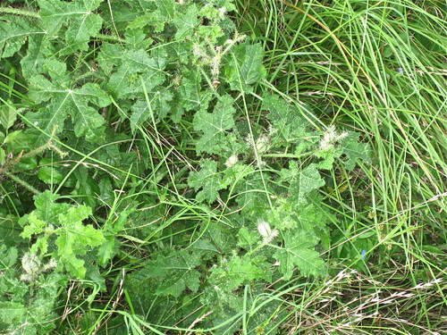
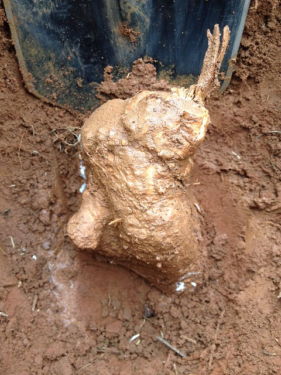

Scientific Name(s): Cnidoscolus stimulosus, Cnidoscolus texanus
Abundance: common
What: seeds, taproot
How: seeds raw, roasted; root baked
Where: sunny fields
When: summer, fall
Nutritional Value: protein, calories
Dangers: entire plant is covered in stinging hairs similar to stinging nettle.
Bull nettle flower and leaves.

Bull nettle seed pod which hold the tasty seeds.


Bull nettle plant.

Digging up a Bull Nettle root.

Usually found in sunny, loose-soiled fields and other disturbed areas, these small, leggy bushes rarely grow more than two feet tall. The stinging hairs which cover bull nettle stems, leaves, and fruit offer a great protection against man and beast. While the pain they inflict is fierce, it often lasts less than an hour. The white blooms begin appearing in early spring and continue on through mid-summer. The green seed pods track the flowers by about a month.
Strangely enough, bull nettles are often commonly found growing near sassafras trees in Central and East Texas woods such as the Sam Houston National Forest. Bull nettles prefer full sun so finding them in the woods is odd, especially only in the presence of sassafras. Perhaps the sassafras root system both loosens the soil and releases some chemical which aids the bull nettles growth.
This plant, though armed with a similar defensive mechanism, is not related to stinging nettle. It's leaves are not edible in any way.
Harvesting the delicious seeds is best done using BBQ tongs or thick leather gloves to remove the seed pods from the plant. Then place these pods in a brown paper bag and wait a while (days). The pods will dry and then rupture, releasing the seeds which can then be toasted for a wonderful treat. The roasted seeds can also be pounded/ground into something similar to cornmeal and used in the same manner.
Digging up the taproot can be tricky. First, carefully cut away the top part of the plant with a machete or other long blade, then dig a hole 18" deep approximately one foot away from the stem of the plant. Carefully shave away the soil on the plant-side of the hole until you see the earth-colored root. At this point carefully remove the dirt from around the fragile root until you can lift it from the soil. Peel the root and then either roast or boil it like a potato. It will retain a bit of firmness rather than turning as soft as a potato. Through the root’s center runs a strong fiber core which needs to be discarded.